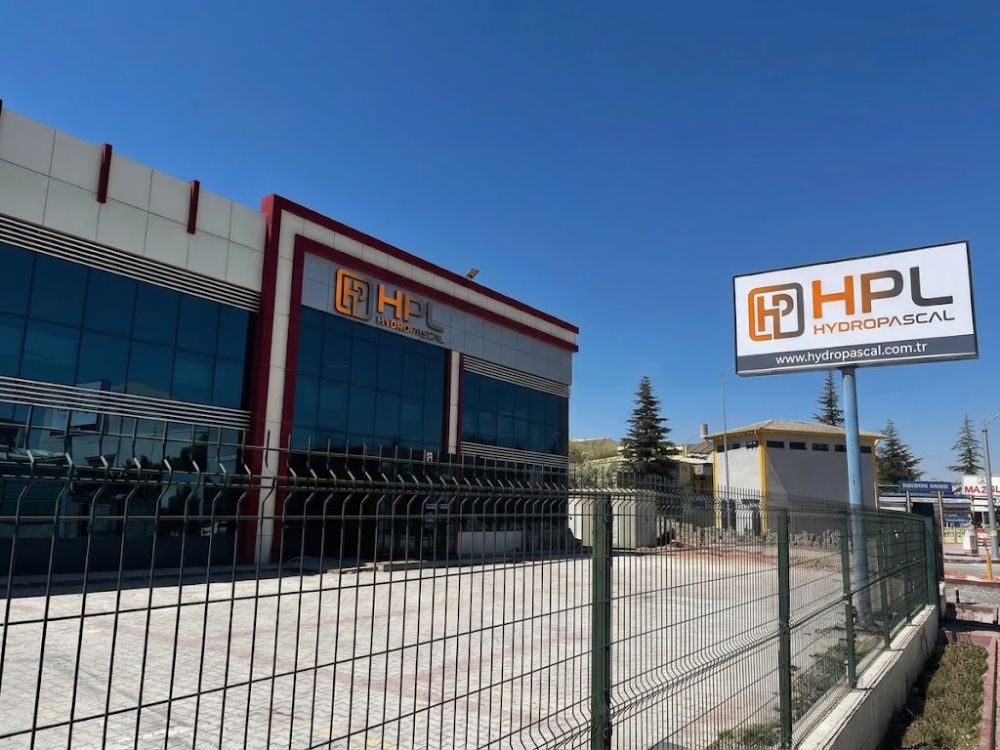

Hakkımızda

HPL HydroPascal
HydroPascal, hidrolik tarımsal kaldırıcılar, üst bağlantı kolları (top link) ve teleskopik kaldırıcılar üretmek amacıyla 2019 yılında kurulmuştur. Kuruluşundan bu yana şirket, kalite, dayanıklılık ve mühendislik mükemmelliğine güçlü bir vurgu yaparak yüksek performanslı çözümler sunan, sektörde güvenilir ve yenilikçi bir marka olarak hızla büyümüştür.
2021 yılında HydroPascal, PascalForge ve PascalCast markalarını bünyesine katarak üretim kapasitesini daha da güçlendirmiş, faaliyetlerini dövme ve döküm teknolojilerine genişletmiştir. Bu stratejik entegrasyon, şirketin üretim süreçleri üzerinde tam kontrol sahibi olmasını sağlayarak üstün kalite standartlarını ve artan operasyonel verimliliği güvence altına almıştır.
Tüm ürünlerimiz gelişmiş CAD-CAM teknolojileri kullanılarak tasarlanmakta, kanıtlanmış ve yüksek dayanıklılığa sahip hammaddelerle üretilmekte ve CNC tezgahlarında milimetrik hassasiyetle işlenmektedir.
Üretim süreçlerimizin her aşaması CE, ISO ve TSE gibi uluslararası kabul görmüş kalite sertifikalarıyla güvence altındadır. Müşteri odaklı yaklaşımımız, esnek üretim kapasitemiz ve yenilikçi altyapımız sayesinde her proje için özel, verimli ve etkili çözümler sunuyoruz.
HydroPascal, tarım makineleri yedek parça sektörüne hizmet vermek misyonuyla 2019 yılında kurulmuştur. Şirket, Massey Ferguson, Ford, New Holland, John Deere, Case, Renault, Zetor, Landini, Fendt, Deutz, Same gibi markalar dahil olmak üzere hem klasik hem de modern traktörler için geniş bir yelpazede yüksek kaliteli yedek parça üretiminde uzmanlaşmıştır.
HydroPascal, üretim kapasitesinin yanı sıra, PascalForge ve PascalCast markaları altında döküm ve dövme tedarik çözümleri sunmasını sağlayan stratejik iş birlikleri geliştirmiştir. Bu entegre yaklaşım sayesinde şirket, tarım sektörünün gelişen taleplerini karşılamak için güvenilir, dayanıklı ve performans odaklı bileşenler sunmaktadır.
Misyon, Vizyon & Değerler
Misyonumuz
Tarım makineleri sektörüne, üstün mühendislik ve titiz üretim standartlarıyla güvenilir, dayanıklı ve yüksek performanslı hidrolik silindir çözümleri sunmak; iş ortaklarımızın her projede maksimum verimliliğe ulaşmasını sağlamak.
Vizyonumuz
Konya merkezli üretim gücümüzü, PascalForge ve PascalCast markalarımızla entegre ederek hidrolik, döküm ve dövme alanlarında Türkiye'den dünyaya uzanan, sektörünün referans gösterilen küresel bir mühendislik markası olmak.
Değerlerimiz
Mühendislik mükemmelliği, müşteri odaklılık, sürdürülebilir kalite ve şeffaf iş ortaklığı. Her projede CE, ISO ve TSE standartlarına bağlı kalarak uzun vadeli güven inşa ediyoruz.
Kilometre Taşlarımız
Kuruluş
HydroPascal, hidrolik tarımsal kaldırıcılar, üst bağlantı kolları ve teleskopik kaldırıcılar üretmek amacıyla Konya'da kuruldu.
PascalForge & PascalCast
Dövme ve döküm teknolojilerine genişleyerek PascalForge ve PascalCast markalarını bünyemize kattık; üretim süreçlerimiz üzerinde tam kontrol sağladık.
Bugün
Massey Ferguson, Ford, New Holland, John Deere, Case, Renault, Zetor, Landini, Fendt, Deutz ve Same dahil geniş bir traktör markası yelpazesine hizmet veren, Türkiye'den dünyaya açılan entegre bir mühendislik markasıyız.
Ekibimiz
Mühendislikten üretime, kalite kontrolden ihracata kadar her aşamada uzman kadromuzla yanınızdayız.
Mühendislik Ekibi
CAD-CAM tasarım ve FEA analizi ile her ürünü baştan sona optimize eder.
Üretim Ekibi
CNC tezgahlarında milimetrik hassasiyetle üretim yapan deneyimli operatörler.
Kalite Kontrol Ekibi
CE, ISO ve TSE standartlarına uygunluğu her üretim aşamasında titizlikle denetler.
Satış & İhracat Ekibi
Dünyanın dört bir yanındaki iş ortaklarımızla güçlü ve sürdürülebilir ilişkiler kurar.
Kalite Sertifikalarımız
CE Uygunluk
Ürünlerimiz Avrupa Birliği güvenlik, sağlık ve çevre koruma standartlarına uygundur.
ISO Kalite Yönetimi
Üretim süreçlerimiz uluslararası kabul görmüş kalite yönetim sistemi standartlarıyla yürütülür.
TSE Belgeli Üretim
Türk Standartları Enstitüsü kriterlerine uygun, denetlenmiş üretim süreçleri.
Bizimle Çalışmaya Hazır mısınız?
Ekibimiz, ihtiyacınıza en uygun hidrolik silindir, OEM parça, döküm veya dövme çözümünü sunmak için hazır.
Teklif Al